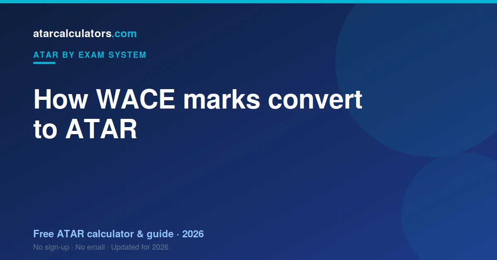

WACE course scores are scaled by TISC to account for how strong each subject’s cohort is, combined into an aggregate, and ranked into an ATAR between 0.00 and 99.95. So your ATAR reflects your rank against your age group, not the raw average of your marks. SCSA runs the Western Australian Certificate of Education; TISC works out your ATAR.
Key takeaways
- Your ATAR is a rank from 0.00 to 99.95, not the average of your WACE results.
- TISC scales each subject, based on how strong its cohort is.
- Your best four scaled course scores form your aggregate.
- That aggregate is ranked against your age group to give your ATAR.
- SCSA runs the Western Australian Certificate of Education; TISC works out your ATAR.
- Each course is 50% school assessment and 50% the WACE exam.
- You cannot average your marks to get your ATAR.

A rank, not an average
The first thing to understand is that your ATAR is a rank. An ATAR of 85 does not mean your marks averaged 85. It means you finished ahead of about 85% of your age group.
Because it is a rank, it lets universities compare students who took completely different subjects. That is the whole point of the ATAR. Your results feed into it, but they are not it.
Keeping this distinction clear makes everything else about the WACE and the ATAR easier to follow. Marks describe subjects; the ATAR ranks students.
What the WACE is
The WACE is your certificate; the ATAR is a rank derived from it. The crucial distinction in WA is between ATAR courses and General courses — only the former reach your TEA.
How a subject result is built
Your WACE result is a set of course marks. Only ATAR courses matter for the rank; General courses build the certificate and stop there.
How your assessment is handled
ATAR courses combine school assessment with an external exam. Both feed the mark that TISC then scales.
Why WA’s median ATAR runs higher
WA’s median ATAR tends to run higher than the eastern states, often around the low 80s. This is because a smaller share of WA students receive an ATAR.
This does not make WA “easier”. It reflects participation: when fewer students sit the ATAR, the median of those who do sits higher. The rank still means the same nationally.
Step 1: Your subjects are scaled
Once you have your course scores, TISC scales them. Scaling adjusts each subject so that a result in one subject is worth the same as the same result in another.
It works by looking at how the students in a subject perform across all their subjects. If the group is strong overall, the subject scales up. If the group is broad, it scales down.
Crucially, your position within the subject never changes. Scaling shifts the whole subject up or down; it only changes how your result counts towards your ATAR.
Why scaling exists
Scaling exists to be fair. Without it, a student who took easier subjects would have an advantage over one who took harder, more competitive subjects.
Scaling removes that edge. It means no student is better or worse off simply because of the subjects they chose. That fairness is the whole reason it exists.
This is why the idea that “hard subjects scale up” is only half true. A subject scales up because its students are strong, not because the content is difficult. See WACE scaling explained.
Step 2: Your aggregate
Your TEA takes your best four scaled ATAR course marks, plus up to 10% in bonuses. The maximum is 430 — 400 from the courses and 30 from bonuses.
The English requirement
WA has literacy requirements for the WACE itself. Satisfy them or the certificate does not issue, whatever your scaled marks look like.
Step 3: Your aggregate becomes a rank
The final step orders every WA TEA and turns your position into a rank out of 99.95.
A worked example
Work the example with WA numbers: four scaled marks out of 400, plus bonuses to 430. Note the bonus applies after scaling — it multiplies a scaled mark, it does not repair a weak one.
Subject results are not your ATAR
A TEA is not an ATAR. Your TEA out of 430 becomes a percentile only once TISC ranks the cohort.
Who does what in Western Australia
Two bodies are involved. the School Curriculum and Standards Authority (SCSA) runs the WACE: it sets your subjects, runs the assessment, and gives you your results.
the Tertiary Institutions Service Centre (TISC) takes those results, scales them, and works out your ATAR. So SCSA gives you your WACE; TISC gives you your ATAR. See TISC explained.
How many subjects should you take?
WA counts four ATAR courses. A fifth does not enter the base, which surprises students who assume more subjects means more insurance.
Turning your estimate into a plan
Plan around four ATAR courses and confirm every one of them is an ATAR course. That single check is worth more than any study tip.
Estimate your ATAR
The clearest way to see all this is to try it. Our WACE ATAR calculator applies scaling to your course scores and gives you an estimated ATAR.
Compare that estimate with the cutoff for your course, and you have a clear target for the rest of the year. You can also use the Western Australia ATAR calculator for the same result.
What scaling does to a result
The 10% bonus applies to Mathematics Methods, Mathematics Specialist and languages only. It is a tiebreaker on a scaled mark, never a strategy.
Why you cannot game the system
You cannot game WACE scaling. Taking Specialist for the bonus while ranking poorly gives you 10% of a poor scaled mark.
Subject results are not band labels
WA has no bands. Course marks, scaling, a TEA out of 430 — if someone mentions a Band 6, they are describing NSW.
Why you cannot calculate it exactly
No published table converts course marks into an exact ATAR, because scaling moves with the cohort. Any tool gives an estimate.
Your ATAR in one idea
If you take one idea from this: only ATAR courses count, four of them, scaled, plus bonuses.
The balance of coursework and exams
The two halves are separate: the School Curriculum and Standards Authority runs your WACE, TISC calculates the ATAR.
What this means for choosing subjects
The takeaway: confirm your courses are ATAR courses, rank in four of them, and treat the bonus as a tiebreaker.
Common questions
How are WACE results converted to an ATAR?
TISC scales your WACE course scores to account for each subject’s cohort strength, combines them into an aggregate, and ranks that against your age group to give an ATAR from 0.00 to 99.95.
What is scaling in the WACE?
Scaling adjusts each subject so the same result means the same thing across subjects, based on how strong the group taking it was. It decides how much each of your results contributes to your ATAR.
How many subjects count for the WACE ATAR?
Your ATAR comes from your best four scaled course scores. So you need at least four ATAR courses, and most students take five or six for safety.
Why isn't my ATAR the average of my marks?
Because the ATAR is a rank, not an average. Your scaled results are combined and ranked against your age group, so your ATAR reflects your position, not the arithmetic mean of your results.